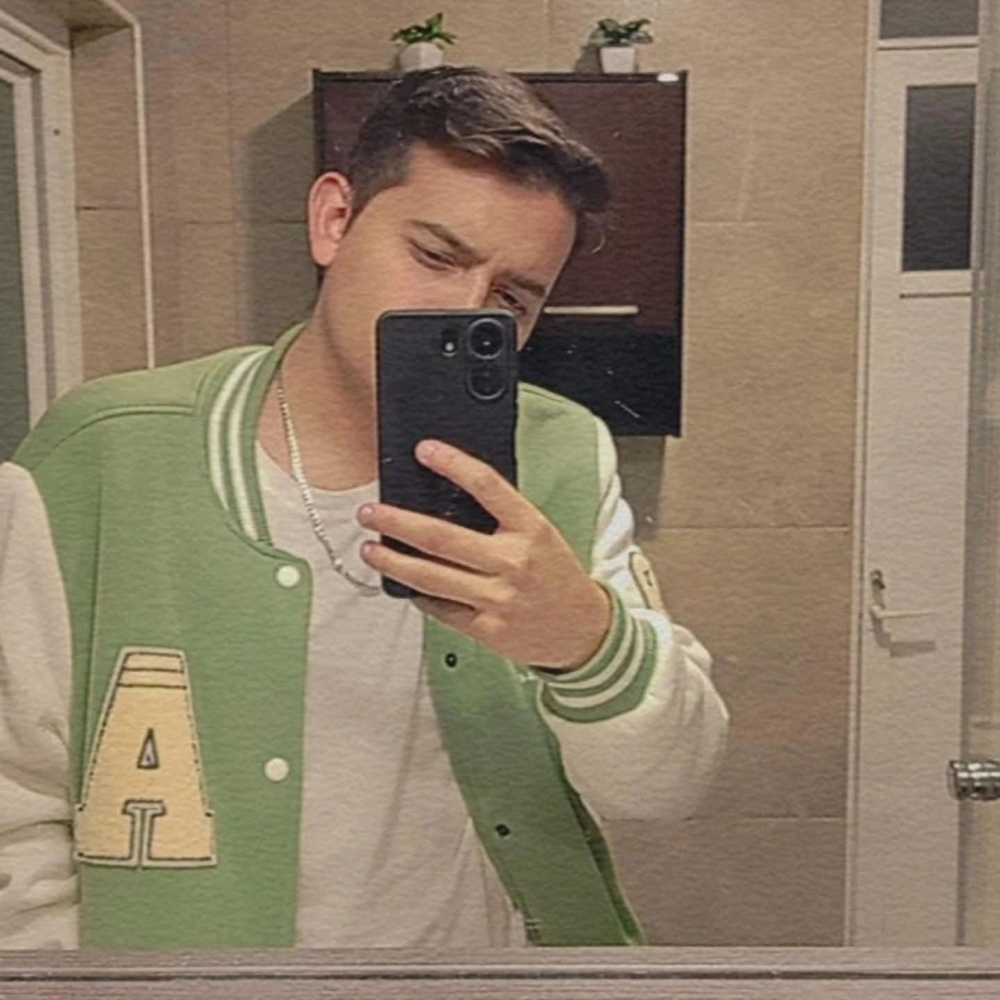

¡Bienvenido a mi Portafolio!
Ingeniero en Sistemas Computacionales con experiencia en desarrollo de software y soluciones innovadoras.
Acerca de mi

Ingeniero en Sistemas Computacionales con más de 3 años de experiencia en el sector empresarial, especializado en el desarrollo de software, análisis de datos y soluciones tecnológicas personalizadas. Profesional orientado a resultados, con una alta capacidad de proactividad y adaptabilidad en entornos dinámicos y cambiantes.
Posee habilidades excepcionales de comunicación, tanto oral como escrita, que facilitan la colaboración efectiva con equipos multidisciplinarios. Su enfoque en la toma de decisiones se basa en un análisis detallado de la información disponible, lo que le permite encontrar soluciones eficaces y eficientes ante desafíos complejos.
Entre sus principales competencias destacan la resolución de problemas, la capacidad para liderar proyectos tecnológicos y la implementación de estrategias innovadoras. Con un enfoque creativo y orientado al cliente, ha demostrado ser capaz de superar obstáculos y garantizar el éxito en proyectos de alto impacto.
Además, cuenta con una sólida formación académica y certificaciones en áreas clave como gestión ágil de proyectos (SCRUM) y marketing digital, lo que le permite integrar conocimientos técnicos con habilidades estratégicas para ofrecer soluciones integrales a las necesidades de los clientes y organizaciones.
Comprometido con la mejora continua, mantiene un fuerte interés en el aprendizaje constante, adoptando nuevas tecnologías y metodologías que optimizan los procesos y promueven la innovación. Su capacidad para trabajar bajo presión y adaptarse rápidamente a nuevas circunstancias lo convierte en un recurso valioso para cualquier equipo o proyecto.
Posee habilidades excepcionales de comunicación, tanto oral como escrita, que facilitan la colaboración efectiva con equipos multidisciplinarios. Su enfoque en la toma de decisiones se basa en un análisis detallado de la información disponible, lo que le permite encontrar soluciones eficaces y eficientes ante desafíos complejos.
Entre sus principales competencias destacan la resolución de problemas, la capacidad para liderar proyectos tecnológicos y la implementación de estrategias innovadoras. Con un enfoque creativo y orientado al cliente, ha demostrado ser capaz de superar obstáculos y garantizar el éxito en proyectos de alto impacto.
Además, cuenta con una sólida formación académica y certificaciones en áreas clave como gestión ágil de proyectos (SCRUM) y marketing digital, lo que le permite integrar conocimientos técnicos con habilidades estratégicas para ofrecer soluciones integrales a las necesidades de los clientes y organizaciones.
Comprometido con la mejora continua, mantiene un fuerte interés en el aprendizaje constante, adoptando nuevas tecnologías y metodologías que optimizan los procesos y promueven la innovación. Su capacidad para trabajar bajo presión y adaptarse rápidamente a nuevas circunstancias lo convierte en un recurso valioso para cualquier equipo o proyecto.